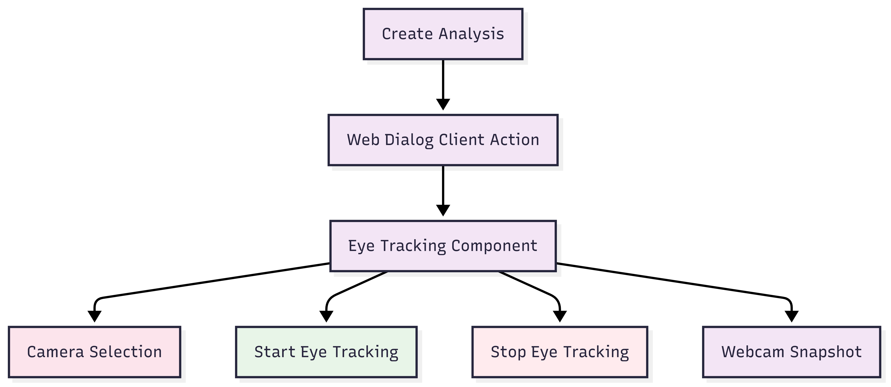
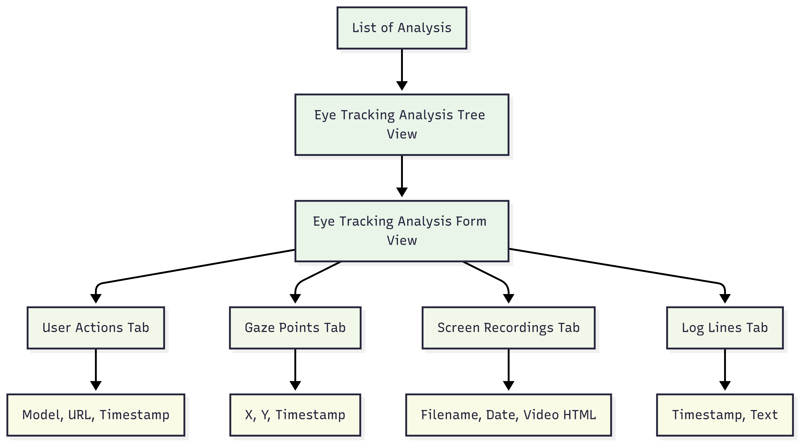
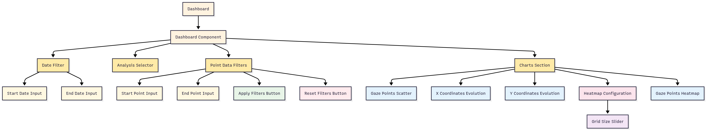
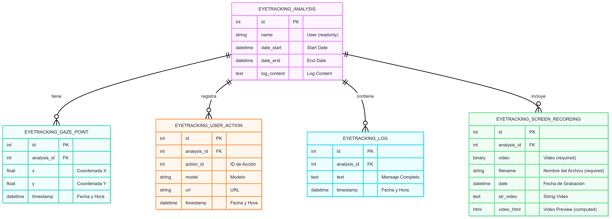

Eye-Tracking for Marketing & Research
See what your customers see. Turn user attention into actionable business insights directly within Odoo.

Clicks and page views don't measure real user attention. Traditional analytics are disconnected from your core business data (sales, inventory, CRM) stored in your ERP.
Reveal what truly captures your users' gaze with webcam-based Eye-Tracking. By integrating this technology into Odoo, you centralize analysis and connect visual insights directly to business results.
No expensive or special hardware required. Works with standard webcams.
All AI processing happens locally in the user's browser. No sensitive video data is sent to external servers.
Generate insightful heatmaps, gaze plots, and get full session recordings to understand user behavior.
Manage, view, and analyze studies directly from your Odoo backend, just like any other business object.
Launch an analysis session. The user is guided through calibration and the recording begins.
All analyses are centrally stored and accessible from a standard Odoo list view.
Explore the results in an interactive dashboard with heatmaps and dynamic charts.
The module is built on Odoo's robust ORM and the OWL component library. It uses a single RPC endpoint to efficiently receive and store all session data in batch, ensuring minimal performance impact.

Eduardo Robles Russo
This module was developed as part of a research project at the University of Seville (ETSII).
For questions or support, please contact:
tu.email.de.soporte@example.com
Or visit the project repository on GitHub.